# Things to do
# Clean Data
# Build a model (1 for each)import pandas as pd
import matplotlib.pyplot as plt
import seaborn as sns
from scipy.stats import ttest_ind, chi2_contingency
from sklearn.model_selection import train_test_split
from sklearn.ensemble import RandomForestClassifier
from sklearn.metrics import classification_report
# Load the dataset
data = pd.read_csv('bank_churn.csv') # Replace with your file path
# Encode categorical variables
data['Geography'] = data['Geography'].astype('category').cat.codes
data['Gender'] = data['Gender'].astype('category').cat.codes
# Separate features and target
X = data.drop(['CustomerId', 'Surname', 'Exited'], axis=1)
y = data['Exited']
# Compare churners and non-churners
churners = data[data['Exited'] == 1]
non_churners = data[data['Exited'] == 0]
# Statistical tests for numerical features
for col in X.columns:
stat, p_val = ttest_ind(churners[col], non_churners[col], equal_var=False)
print(f"{col}: t-statistic={stat:.2f}, p-value={p_val:.2e}")
# Example: Plot distributions for balance
sns.histplot(churners['Balance'], color='red', label='Churners', kde=True)
sns.histplot(non_churners['Balance'], color='blue', label='Non-Churners', kde=True)
plt.legend()
plt.title('Balance Distribution')
plt.show()
# Predictive Modeling: Random Forest
X_train, X_test, y_train, y_test = train_test_split(X, y, test_size=0.2, random_state=42, stratify=y)
rf_model = RandomForestClassifier(random_state=42)
rf_model.fit(X_train, y_train)
y_pred = rf_model.predict(X_test)
print("Random Forest Classification Report:\n", classification_report(y_test, y_pred))
# Feature Importance
feature_importances = pd.DataFrame({
'Feature': X.columns,
'Importance': rf_model.feature_importances_
}).sort_values(by='Importance', ascending=False)
print(feature_importances)CreditScore: t-statistic=-2.63, p-value=8.46e-03
Geography: t-statistic=3.86, p-value=1.15e-04
Gender: t-statistic=-10.69, p-value=3.27e-26
Age: t-statistic=30.42, p-value=4.71e-179
Tenure: t-statistic=-1.38, p-value=1.66e-01
Balance: t-statistic=12.47, p-value=6.32e-35
NumOfProducts: t-statistic=-3.70, p-value=2.19e-04
HasCrCard: t-statistic=-0.71, p-value=4.78e-01
IsActiveMember: t-statistic=-16.13, p-value=2.38e-56
EstimatedSalary: t-statistic=1.20, p-value=2.29e-01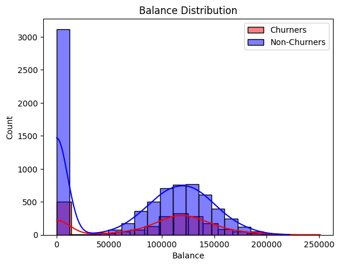
Random Forest Classification Report:
precision recall f1-score support
0 0.88 0.97 0.92 1593
1 0.78 0.46 0.58 407
accuracy 0.86 2000
macro avg 0.83 0.71 0.75 2000
weighted avg 0.86 0.86 0.85 2000
Feature Importance
3 Age 0.239934
9 EstimatedSalary 0.147069
0 CreditScore 0.144104
5 Balance 0.141194
6 NumOfProducts 0.129134
4 Tenure 0.081958
8 IsActiveMember 0.039596
1 Geography 0.038467
7 HasCrCard 0.019583
2 Gender 0.018959# Churn distribution (Exited = 1 means churned)
churn_counts = data['Exited'].value_counts(normalize=True)
print("Churn Distribution:\n", churn_counts)
# Plot churn distribution
sns.barplot(x=churn_counts.index, y=churn_counts.values, palette="coolwarm")
plt.title('Churn Distribution')
plt.xlabel('Churn Status (0 = Non-Churn, 1 = Churn)')
plt.ylabel('Proportion')
plt.xticks([0, 1], ['Non-Churn', 'Churn'])
plt.show()
# Distribution of Age by Churn Status
sns.histplot(data=data, x='Age', hue='Exited', kde=True, palette="coolwarm", alpha=0.6)
plt.title('Age Distribution by Churn Status')
plt.xlabel('Age')
plt.ylabel('Frequency')
plt.legend(title='Churn Status', labels=['Non-Churn', 'Churn'])
plt.show()
# Gender distribution by Churn Status
sns.countplot(data=data, x='Gender', hue='Exited', palette="coolwarm")
plt.title('Gender Distribution by Churn Status')
plt.xlabel('Gender (0 = Male, 1 = Female)')
plt.ylabel('Count')
plt.legend(title='Churn Status', labels=['Non-Churn', 'Churn'])
plt.show()
# Product usage distribution by Churn Status
sns.boxplot(data=data, x='Exited', y='NumOfProducts', palette="coolwarm")
plt.title('Number of Products by Churn Status')
plt.xlabel('Churn Status (0 = Non-Churn, 1 = Churn)')
plt.ylabel('Number of Products')
plt.xticks([0, 1], ['Non-Churn', 'Churn'])
plt.show()
# Balance distribution by Churn Status
sns.boxplot(data=data, x='Exited', y='Balance', palette="coolwarm")
plt.title('Account Balance by Churn Status')
plt.xlabel('Churn Status (0 = Non-Churn, 1 = Churn)')
plt.ylabel('Balance')
plt.xticks([0, 1], ['Non-Churn', 'Churn'])
plt.show()Churn Distribution:
Exited
0 0.7963
1 0.2037
Name: proportion, dtype: float64FutureWarning:
Passing `palette` without assigning `hue` is deprecated and will be removed in v0.14.0. Assign the `x` variable to `hue` and set `legend=False` for the same effect.
sns.barplot(x=churn_counts.index, y=churn_counts.values, palette="coolwarm")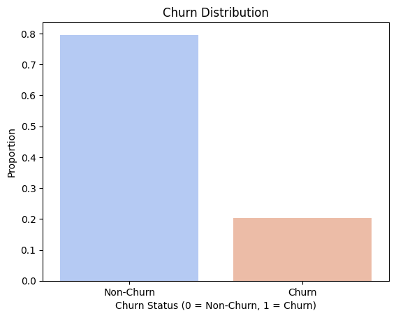
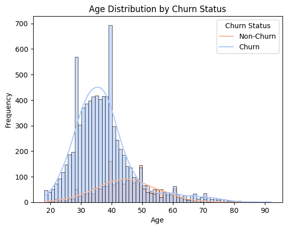
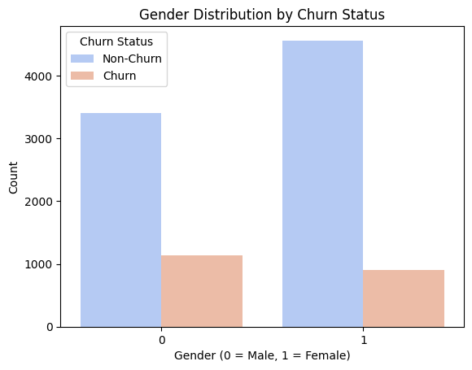
FutureWarning:
Passing `palette` without assigning `hue` is deprecated and will be removed in v0.14.0. Assign the `x` variable to `hue` and set `legend=False` for the same effect.
sns.boxplot(data=data, x='Exited', y='NumOfProducts', palette="coolwarm")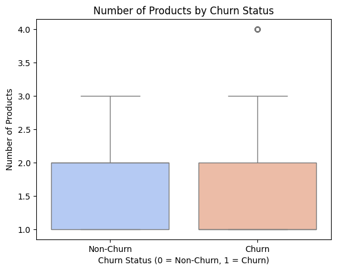
FutureWarning:
Passing `palette` without assigning `hue` is deprecated and will be removed in v0.14.0. Assign the `x` variable to `hue` and set `legend=False` for the same effect.
sns.boxplot(data=data, x='Exited', y='Balance', palette="coolwarm")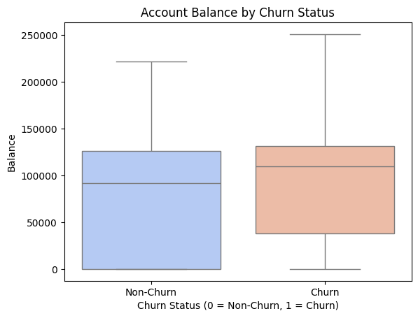
# 필요한 라이브러리 불러오기
import pandas as pd
import seaborn as sns
import matplotlib.pyplot as plt
# 1. 데이터 로드
file_path = '/content/Bank_Churn.csv' # CSV 파일 경로
data = pd.read_csv(file_path)
# 범주형 열 자동 감지 후 변환
categorical_cols = data.select_dtypes(include=['object']).columns
data_dummy = pd.get_dummies(data, columns=categorical_cols, drop_first=True)
# 2. 숫자형 변수 선택
numeric_data = data.select_dtypes(include=['float64', 'int64']) # 숫자형 열만 선택
# 3. 상관 행렬 계산
corr_matrix = numeric_data.corr() # 상관 계수 계산
# 4. 상관 행렬 히트맵 시각화
plt.figure(figsize=(10, 8)) # 그래프 크기 설정
sns.heatmap(
corr_matrix,
annot=True, # 상관 계수 값 표시
fmt=".2f", # 값 표시 형식 (소수점 2자리)
cmap='coolwarm', # 색상 팔레트
cbar=True # 컬러 바 표시
)
plt.title("Correlation Matrix Heatmap", fontsize=16) # 제목 추가
plt.show()
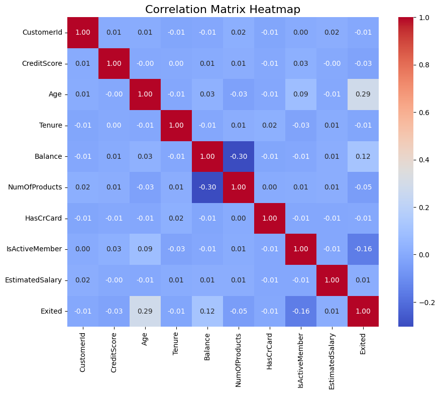
from scipy.stats import f_oneway
# Churn rate by geography
churn_rate_by_geo = data.groupby('Geography')['Exited'].mean()
print(churn_rate_by_geo)
# Visualize churn rates
churn_rate_by_geo.plot(kind='bar', color=['red', 'blue', 'green'])
plt.title('Churn Rate by Geography')
plt.xticks([0, 1, 2], ['France', 'Germany', 'Spain'], rotation=0)
plt.show()
# ANOVA test for Balance by Geography
anova_stat, p_val = f_oneway(
data[data['Geography'] == 0]['Balance'],
data[data['Geography'] == 1]['Balance'],
data[data['Geography'] == 2]['Balance']
)
print(f"ANOVA Test: F-statistic={anova_stat:.2f}, p-value={p_val:.2e}")Geography
0 0.161548
1 0.324432
2 0.166734
Name: Exited, dtype: float64
ANOVA Test: F-statistic=958.43, p-value=0.00e+00from sklearn.cluster import KMeans
from sklearn.preprocessing import StandardScaler
from sklearn.decomposition import PCA
# Scale features
scaler = StandardScaler()
X_scaled = scaler.fit_transform(X)
# Perform PCA for visualization (optional)
pca = PCA(n_components=2)
X_pca = pca.fit_transform(X_scaled)
# K-Means clustering
kmeans = KMeans(n_clusters=4, random_state=42)
data['Cluster'] = kmeans.fit_predict(X_scaled)
# Visualize clusters
plt.scatter(X_pca[:, 0], X_pca[:, 1], c=data['Cluster'], cmap='viridis', alpha=0.7)
plt.title('Customer Segments (PCA)')
plt.xlabel('PC1')
plt.ylabel('PC2')
plt.colorbar(label='Cluster')
plt.show()
# Cluster profiles
cluster_profiles = data.groupby('Cluster').mean()
print(cluster_profiles)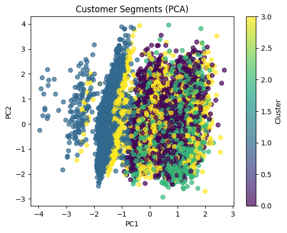
--------------------------------------------------------------------------- TypeError Traceback (most recent call last) /usr/local/lib/python3.10/dist-packages/pandas/core/groupby/groupby.py in _agg_py_fallback(self, how, values, ndim, alt) 1941 try: -> 1942 res_values = self._grouper.agg_series(ser, alt, preserve_dtype=True) 1943 except Exception as err: /usr/local/lib/python3.10/dist-packages/pandas/core/groupby/ops.py in agg_series(self, obj, func, preserve_dtype) 863 --> 864 result = self._aggregate_series_pure_python(obj, func) 865 /usr/local/lib/python3.10/dist-packages/pandas/core/groupby/ops.py in _aggregate_series_pure_python(self, obj, func) 884 for i, group in enumerate(splitter): --> 885 res = func(group) 886 res = extract_result(res) /usr/local/lib/python3.10/dist-packages/pandas/core/groupby/groupby.py in <lambda>(x) 2453 "mean", -> 2454 alt=lambda x: Series(x, copy=False).mean(numeric_only=numeric_only), 2455 numeric_only=numeric_only, /usr/local/lib/python3.10/dist-packages/pandas/core/series.py in mean(self, axis, skipna, numeric_only, **kwargs) 6548 ): -> 6549 return NDFrame.mean(self, axis, skipna, numeric_only, **kwargs) 6550 /usr/local/lib/python3.10/dist-packages/pandas/core/generic.py in mean(self, axis, skipna, numeric_only, **kwargs) 12419 ) -> Series | float: > 12420 return self._stat_function( 12421 "mean", nanops.nanmean, axis, skipna, numeric_only, **kwargs /usr/local/lib/python3.10/dist-packages/pandas/core/generic.py in _stat_function(self, name, func, axis, skipna, numeric_only, **kwargs) 12376 > 12377 return self._reduce( 12378 func, name=name, axis=axis, skipna=skipna, numeric_only=numeric_only /usr/local/lib/python3.10/dist-packages/pandas/core/series.py in _reduce(self, op, name, axis, skipna, numeric_only, filter_type, **kwds) 6456 ) -> 6457 return op(delegate, skipna=skipna, **kwds) 6458 /usr/local/lib/python3.10/dist-packages/pandas/core/nanops.py in f(values, axis, skipna, **kwds) 146 else: --> 147 result = alt(values, axis=axis, skipna=skipna, **kwds) 148 /usr/local/lib/python3.10/dist-packages/pandas/core/nanops.py in new_func(values, axis, skipna, mask, **kwargs) 403 --> 404 result = func(values, axis=axis, skipna=skipna, mask=mask, **kwargs) 405 /usr/local/lib/python3.10/dist-packages/pandas/core/nanops.py in nanmean(values, axis, skipna, mask) 719 the_sum = values.sum(axis, dtype=dtype_sum) --> 720 the_sum = _ensure_numeric(the_sum) 721 /usr/local/lib/python3.10/dist-packages/pandas/core/nanops.py in _ensure_numeric(x) 1700 # GH#44008, GH#36703 avoid casting e.g. strings to numeric -> 1701 raise TypeError(f"Could not convert string '{x}' to numeric") 1702 try: TypeError: Could not convert string 'HargraveHillMitchellGerasimovYenMcWilliamsLombardoClarkeOsborneLavineBianchiTylerMartinOkagbueBucchoT'ienClarkHammondBrownlessGlauertPisanoPalermoBallardCavenaghReadPostleBuleyLeonardOnyeoruluOsborneFuDunbabinMauldonParsonsKoWelchChidozieCalabresiZetticciMacDonaldKaodilinakachukwuArthurLiChiaVasinForwoodTaylorMadukweBennelongAlexeevaMacleanChigolumWilkinsonTreacyTaubmanRobinsonHawkinsFuCampbellAshboltRozierOgbonnayaCocciT'aoFordTsaiOnuoraMcDonaldMillerHayLucasSmithPachecoTsaoIfesinachiHughesJessMortonRossiReppertCh'iuFieldingZetticciBoyleWallworkDavidsonO'DonnellAhmedChuangTienHartleySkinnerMcEncroeGordonTs'aiHunterHsiehKnowlesDayTsaoNwabugwuYoungKerrFreemanSeleznyovIkedinachukwuAmosSimmonsRobinsonBianchiChenIbrahimovaNolanScottMonaldoColeAngeloKoTingBlackIkemefunaMorrisonCelisChengOuthwaitePaiMitchellKoFiskChiangHeathDellucciT'angStevensonWeiPisaniMannaRicciCarrFindlayHughesChukwuemekaSwiftRossUspenskyCookNewboldHeHiltonSunEvansPisanoAnkudinovLewisKirbyMartinHsiaWesterbergKryukovaSeleznevaFreemanLoMacleodPisanoMacartneyLuWaltonBrookesShihUkaegbunamDavideBurnsHanReichardPriceRitchieMackenziePendergrassEvansBillsonTengObialoLinMcKayRickardsBegumOnyinyechukwukaMaOkwuadigboChanGrecoLombardiAlexandrovaFallaciMaiStoutDuncanCrawfordGetherLarionovaPaiCraigCh'iuRahmanMcMillanPickeringMiramsMcIntyrePagnottoFengDonaldsonChambersMarceloEjimoforSageseNapolitaniWallaceSmallBledsoeWertheimP'anAchebeRussoMaccallumWatkinsMitchelFerdinandChin... The above exception was the direct cause of the following exception: TypeError Traceback (most recent call last) <ipython-input-4-c6a351abe19c> in <cell line: 26>() 24 25 # Cluster profiles ---> 26 cluster_profiles = data.groupby('Cluster').mean() 27 print(cluster_profiles) /usr/local/lib/python3.10/dist-packages/pandas/core/groupby/groupby.py in mean(self, numeric_only, engine, engine_kwargs) 2450 ) 2451 else: -> 2452 result = self._cython_agg_general( 2453 "mean", 2454 alt=lambda x: Series(x, copy=False).mean(numeric_only=numeric_only), /usr/local/lib/python3.10/dist-packages/pandas/core/groupby/groupby.py in _cython_agg_general(self, how, alt, numeric_only, min_count, **kwargs) 1996 return result 1997 -> 1998 new_mgr = data.grouped_reduce(array_func) 1999 res = self._wrap_agged_manager(new_mgr) 2000 if how in ["idxmin", "idxmax"]: /usr/local/lib/python3.10/dist-packages/pandas/core/internals/managers.py in grouped_reduce(self, func) 1467 # while others do not. 1468 for sb in blk._split(): -> 1469 applied = sb.apply(func) 1470 result_blocks = extend_blocks(applied, result_blocks) 1471 else: /usr/local/lib/python3.10/dist-packages/pandas/core/internals/blocks.py in apply(self, func, **kwargs) 391 one 392 """ --> 393 result = func(self.values, **kwargs) 394 395 result = maybe_coerce_values(result) /usr/local/lib/python3.10/dist-packages/pandas/core/groupby/groupby.py in array_func(values) 1993 1994 assert alt is not None -> 1995 result = self._agg_py_fallback(how, values, ndim=data.ndim, alt=alt) 1996 return result 1997 /usr/local/lib/python3.10/dist-packages/pandas/core/groupby/groupby.py in _agg_py_fallback(self, how, values, ndim, alt) 1944 msg = f"agg function failed [how->{how},dtype->{ser.dtype}]" 1945 # preserve the kind of exception that raised -> 1946 raise type(err)(msg) from err 1947 1948 if ser.dtype == object: TypeError: agg function failed [how->mean,dtype->object]
# Import necessary libraries
import pandas as pd
from sklearn.preprocessing import StandardScaler
from sklearn.cluster import KMeans
from sklearn.decomposition import PCA
import seaborn as sns
import matplotlib.pyplot as plt
# Load the dataset
data = pd.read_csv('bank_churn.csv') # Replace with your dataset file path
# Preprocessing for clustering
# Drop irrelevant columns and encode categorical variables
data['Geography'] = data['Geography'].astype('category').cat.codes
data['Gender'] = data['Gender'].astype('category').cat.codes
X = data.drop(['CustomerId', 'Surname', 'Exited'], axis=1) # Keep only numerical features
# Standardize the features
scaler = StandardScaler()
X_scaled = scaler.fit_transform(X)
# K-Means Clustering
# Define the optimal number of clusters using the Elbow Method
inertia = []
range_n_clusters = range(1, 11)
for k in range_n_clusters:
kmeans = KMeans(n_clusters=k, random_state=42)
kmeans.fit(X_scaled)
inertia.append(kmeans.inertia_)
# Plot the Elbow Method
plt.figure(figsize=(8, 6))
plt.plot(range_n_clusters, inertia, marker='o')
plt.title('Elbow Method for Optimal Number of Clusters')
plt.xlabel('Number of Clusters (k)')
plt.ylabel('Inertia')
plt.show()
# Choose the optimal k (based on the elbow plot) and fit K-Means
optimal_k = 4 # Example, adjust based on the elbow plot
kmeans = KMeans(n_clusters=optimal_k, random_state=42)
data['Cluster'] = kmeans.fit_predict(X_scaled)
# Visualize the clusters using PCA for dimensionality reduction
pca = PCA(n_components=2)
X_pca = pca.fit_transform(X_scaled)
plt.figure(figsize=(10, 6))
sns.scatterplot(x=X_pca[:, 0], y=X_pca[:, 1], hue=data['Cluster'], palette='viridis', s=60)
plt.title('Customer Segments (PCA Visualization)')
plt.xlabel('Principal Component 1')
plt.ylabel('Principal Component 2')
plt.legend(title='Cluster')
plt.show()
# Ensure only numeric columns are included in the analysis
numeric_data = data.select_dtypes(include=[float, int])
# Include the cluster column for grouping
numeric_data['Cluster'] = data['Cluster']
# Compute cluster profiles
cluster_profiles = numeric_data.groupby('Cluster').mean()
print("Cluster Profiles:\n", cluster_profiles)
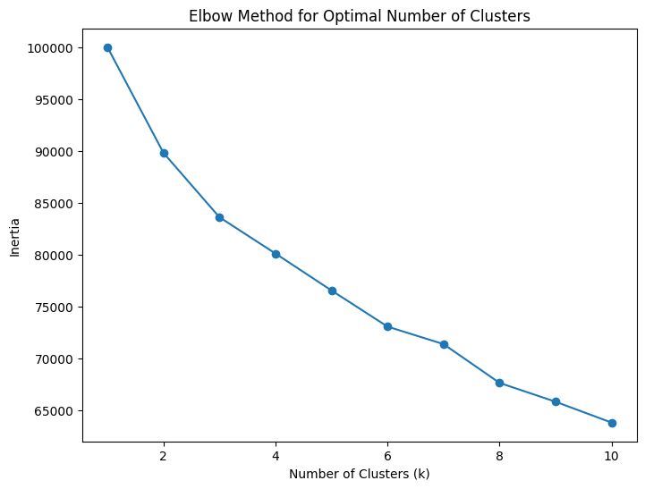
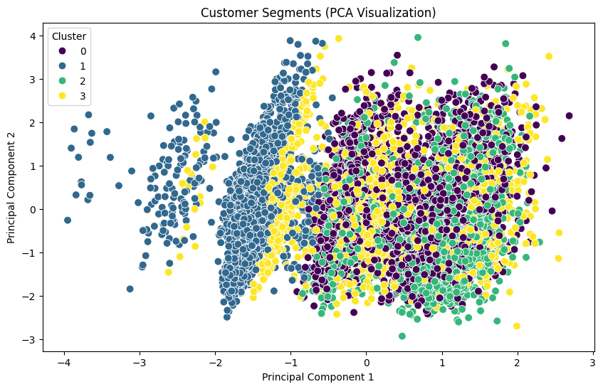
Cluster Profiles:
CustomerId CreditScore Age Tenure Balance \
Cluster
0 1.569082e+07 650.592581 39.685641 4.929325 103679.746658
1 1.569068e+07 650.840863 37.984534 5.075295 9411.432112
2 1.569022e+07 649.755751 39.240903 4.984944 105665.965926
3 1.569228e+07 650.964444 38.502716 5.098765 81422.771284
NumOfProducts HasCrCard IsActiveMember EstimatedSalary Exited
Cluster
0 1.266390 0.701311 0.494404 100726.031871 0.291653
1 2.121286 0.715100 0.530729 99748.752515 0.118030
2 1.128816 0.706399 0.501464 99839.175186 0.229611
3 1.694321 0.699259 0.544198 99819.231778 0.141235 # Import necessary libraries
import pandas as pd
from sklearn.model_selection import train_test_split
from sklearn.preprocessing import StandardScaler, LabelEncoder
from sklearn.metrics import classification_report, accuracy_score
from sklearn.linear_model import LogisticRegression
from sklearn.naive_bayes import GaussianNB
from sklearn.tree import DecisionTreeClassifier
# Step 1: Load dataset
data = pd.read_csv('bank_churn.csv') # Replace with your dataset file path
# Step 2: Data Preprocessing
# Encode categorical variables
le_geography = LabelEncoder()
le_gender = LabelEncoder()
data['Geography'] = le_geography.fit_transform(data['Geography'])
data['Gender'] = le_gender.fit_transform(data['Gender'])
# Define features (X) and target (y)
X = data.drop(['CustomerId', 'Surname', 'Exited'], axis=1) # Drop irrelevant columns
y = data['Exited']
# Split dataset into training and testing sets
X_train, X_test, y_train, y_test = train_test_split(X, y, test_size=0.2, random_state=42, stratify=y)
# Standardize the features
scaler = StandardScaler()
X_train_scaled = scaler.fit_transform(X_train)
X_test_scaled = scaler.transform(X_test)
# Step 3: Logistic Regression
log_model = LogisticRegression(random_state=42)
log_model.fit(X_train_scaled, y_train)
y_pred_log = log_model.predict(X_test_scaled)
print("Logistic Regression Classification Report:\n", classification_report(y_test, y_pred_log))
print("Accuracy:", accuracy_score(y_test, y_pred_log))
# Step 4: Naive Bayes
nb_model = GaussianNB()
nb_model.fit(X_train_scaled, y_train)
y_pred_nb = nb_model.predict(X_test_scaled)
print("Naive Bayes Classification Report:\n", classification_report(y_test, y_pred_nb))
print("Accuracy:", accuracy_score(y_test, y_pred_nb))
# Step 5: Decision Tree
dt_model = DecisionTreeClassifier(max_depth=5, random_state=42)
dt_model.fit(X_train, y_train)
y_pred_dt = dt_model.predict(X_test)
print("Decision Tree Classification Report:\n", classification_report(y_test, y_pred_dt))
print("Accuracy:", accuracy_score(y_test, y_pred_dt))
Logistic Regression Classification Report:
precision recall f1-score support
0 0.82 0.97 0.89 1593
1 0.59 0.14 0.23 407
accuracy 0.81 2000
macro avg 0.70 0.56 0.56 2000
weighted avg 0.77 0.81 0.75 2000
Accuracy: 0.805
Naive Bayes Classification Report:
precision recall f1-score support
0 0.83 0.98 0.90 1593
1 0.76 0.24 0.36 407
accuracy 0.83 2000
macro avg 0.79 0.61 0.63 2000
weighted avg 0.82 0.83 0.79 2000
Accuracy: 0.829
Decision Tree Classification Report:
precision recall f1-score support
0 0.86 0.98 0.91 1593
1 0.80 0.37 0.51 407
accuracy 0.85 2000
macro avg 0.83 0.68 0.71 2000
weighted avg 0.85 0.85 0.83 2000
Accuracy: 0.854# Ivy part
preprocessed_data = pd.read_csv('preprocessed_data.csv')
# Import required libraries
from sklearn.model_selection import train_test_split
from sklearn.ensemble import RandomForestClassifier
from sklearn.linear_model import LogisticRegression
from sklearn.naive_bayes import GaussianNB
from sklearn.tree import DecisionTreeClassifier
from sklearn.metrics import classification_report, confusion_matrix, accuracy_score
import pandas as pd
# Split the data into features (X) and target (y)
X = preprocessed_data.drop('Exited', axis=1)
y = preprocessed_data['Exited']
# Split the dataset into training and testing sets
X_train, X_test, y_train, y_test = train_test_split(X, y, test_size=0.2, random_state=42, stratify=y)
# Dictionary to store model results
model_results = {}
# Function to train and evaluate models
def train_and_evaluate_model(model, model_name):
# Train the model
model.fit(X_train, y_train)
# Make predictions
y_pred = model.predict(X_test)
# Calculate accuracy
acc = accuracy_score(y_test, y_pred)
# Confusion Matrix
conf_matrix = confusion_matrix(y_test, y_pred)
# Classification Report
class_report = classification_report(y_test, y_pred)
# Store results
model_results[model_name] = {
"Accuracy": acc,
"Confusion Matrix": conf_matrix,
"Classification Report": class_report
}
return model
# Train and evaluate models
# Random Forest
rf_model = train_and_evaluate_model(RandomForestClassifier(random_state=42), "Random Forest")
# Logistic Regression
lr_model = train_and_evaluate_model(LogisticRegression(max_iter=500, random_state=42), "Logistic Regression")
# Naive Bayes
nb_model = train_and_evaluate_model(GaussianNB(), "Naive Bayes")
# Decision Tree
dt_model = train_and_evaluate_model(DecisionTreeClassifier(random_state=42), "Decision Tree")
# Display results for each model
for model_name, results in model_results.items():
print(f"--- {model_name} ---")
print(f"Accuracy: {results['Accuracy']}")
#print(f"Confusion Matrix:\n{results['Confusion Matrix']}")
print(f"Classification Report:\n{results['Classification Report']}")
print("\n")--- Random Forest ---
Accuracy: 0.8645
Classification Report:
precision recall f1-score support
0 0.88 0.97 0.92 1593
1 0.78 0.46 0.58 407
accuracy 0.86 2000
macro avg 0.83 0.71 0.75 2000
weighted avg 0.86 0.86 0.85 2000
--- Logistic Regression ---
Accuracy: 0.8095
Classification Report:
precision recall f1-score support
0 0.82 0.97 0.89 1593
1 0.60 0.19 0.29 407
accuracy 0.81 2000
macro avg 0.71 0.58 0.59 2000
weighted avg 0.78 0.81 0.77 2000
--- Naive Bayes ---
Accuracy: 0.7865
Classification Report:
precision recall f1-score support
0 0.80 0.97 0.88 1593
1 0.36 0.06 0.11 407
accuracy 0.79 2000
macro avg 0.58 0.52 0.49 2000
weighted avg 0.71 0.79 0.72 2000
--- Decision Tree ---
Accuracy: 0.783
Classification Report:
precision recall f1-score support
0 0.87 0.85 0.86 1593
1 0.47 0.51 0.49 407
accuracy 0.78 2000
macro avg 0.67 0.68 0.68 2000
weighted avg 0.79 0.78 0.79 2000
/usr/local/lib/python3.10/dist-packages/sklearn/linear_model/_logistic.py:469: ConvergenceWarning: lbfgs failed to converge (status=1):
STOP: TOTAL NO. of ITERATIONS REACHED LIMIT.
Increase the number of iterations (max_iter) or scale the data as shown in:
https://scikit-learn.org/stable/modules/preprocessing.html
Please also refer to the documentation for alternative solver options:
https://scikit-learn.org/stable/modules/linear_model.html#logistic-regression
n_iter_i = _check_optimize_result(# Ivy part
# # SMOTE
# Import required libraries
from imblearn.over_sampling import SMOTE
from sklearn.model_selection import train_test_split
from sklearn.ensemble import RandomForestClassifier
from sklearn.linear_model import LogisticRegression
from sklearn.naive_bayes import GaussianNB
from sklearn.tree import DecisionTreeClassifier
from sklearn.metrics import classification_report, confusion_matrix, accuracy_score
import pandas as pd
# Split the data into features (X) and target (y)
X = preprocessed_data.drop('Exited', axis=1)
y = preprocessed_data['Exited']
# Apply SMOTE to balance the dataset
smote = SMOTE(random_state=42)
X_resampled, y_resampled = smote.fit_resample(X, y)
# Split the resampled dataset into training and testing sets
X_train, X_test, y_train, y_test = train_test_split(
X_resampled, y_resampled, test_size=0.2, random_state=42, stratify=y_resampled
)
# Dictionary to store model results
model_results_smote = {}
# Function to train and evaluate models
def train_and_evaluate_model(model, model_name):
# Train the model
model.fit(X_train, y_train)
# Make predictions
y_pred = model.predict(X_test)
# Calculate accuracy
acc = accuracy_score(y_test, y_pred)
# Confusion Matrix
conf_matrix = confusion_matrix(y_test, y_pred)
# Classification Report
class_report = classification_report(y_test, y_pred)
# Store results
model_results_smote[model_name] = {
"Accuracy": acc,
"Confusion Matrix": conf_matrix,
"Classification Report": class_report
}
return model
# Train and evaluate models
# Random Forest
rf_model_smote = train_and_evaluate_model(RandomForestClassifier(random_state=42), "Random Forest (SMOTE)")
# Logistic Regression
lr_model_smote = train_and_evaluate_model(LogisticRegression(max_iter=500, random_state=42), "Logistic Regression (SMOTE)")
# Naive Bayes
nb_model_smote = train_and_evaluate_model(GaussianNB(), "Naive Bayes (SMOTE)")
# Decision Tree
dt_model_smote = train_and_evaluate_model(DecisionTreeClassifier(random_state=42), "Decision Tree (SMOTE)")
# Display results for each model
for model_name, results in model_results_smote.items():
print(f"--- {model_name} ---")
print(f"Accuracy: {results['Accuracy']}")
print(f"Confusion Matrix:\n{results['Confusion Matrix']}")
print(f"Classification Report:\n{results['Classification Report']}")
print("\n")/usr/local/lib/python3.10/dist-packages/sklearn/linear_model/_logistic.py:469: ConvergenceWarning: lbfgs failed to converge (status=1):
STOP: TOTAL NO. of ITERATIONS REACHED LIMIT.
Increase the number of iterations (max_iter) or scale the data as shown in:
https://scikit-learn.org/stable/modules/preprocessing.html
Please also refer to the documentation for alternative solver options:
https://scikit-learn.org/stable/modules/linear_model.html#logistic-regression
n_iter_i = _check_optimize_result(--- Random Forest (SMOTE) ---
Accuracy: 0.8612680477087257
Confusion Matrix:
[[1393 200]
[ 242 1351]]
Classification Report:
precision recall f1-score support
0 0.85 0.87 0.86 1593
1 0.87 0.85 0.86 1593
accuracy 0.86 3186
macro avg 0.86 0.86 0.86 3186
weighted avg 0.86 0.86 0.86 3186
--- Logistic Regression (SMOTE) ---
Accuracy: 0.7727558066541117
Confusion Matrix:
[[1239 354]
[ 370 1223]]
Classification Report:
precision recall f1-score support
0 0.77 0.78 0.77 1593
1 0.78 0.77 0.77 1593
accuracy 0.77 3186
macro avg 0.77 0.77 0.77 3186
weighted avg 0.77 0.77 0.77 3186
--- Naive Bayes (SMOTE) ---
Accuracy: 0.7115505335844319
Confusion Matrix:
[[1084 509]
[ 410 1183]]
Classification Report:
precision recall f1-score support
0 0.73 0.68 0.70 1593
1 0.70 0.74 0.72 1593
accuracy 0.71 3186
macro avg 0.71 0.71 0.71 3186
weighted avg 0.71 0.71 0.71 3186
--- Decision Tree (SMOTE) ---
Accuracy: 0.7875078468298807
Confusion Matrix:
[[1228 365]
[ 312 1281]]
Classification Report:
precision recall f1-score support
0 0.80 0.77 0.78 1593
1 0.78 0.80 0.79 1593
accuracy 0.79 3186
macro avg 0.79 0.79 0.79 3186
weighted avg 0.79 0.79 0.79 3186
#Jess
# L1 regularization on logistic regression
import pandas as pd
import matplotlib.pyplot as plt
import seaborn as sns
from scipy.stats import ttest_ind, chi2_contingency
from sklearn.model_selection import train_test_split
from sklearn.ensemble import RandomForestClassifier
from sklearn.metrics import classification_report
preprocessed_data = pd.read_csv('/content/preprocessed_data.csv')
# Import required libraries
from sklearn.model_selection import train_test_split
from sklearn.ensemble import RandomForestClassifier
from sklearn.linear_model import LogisticRegression
from sklearn.naive_bayes import GaussianNB
from sklearn.tree import DecisionTreeClassifier
from sklearn.metrics import classification_report, confusion_matrix, accuracy_score
import pandas as pd
# Split the data into features (X) and target (y)
X = preprocessed_data.drop('Exited', axis=1)
y = preprocessed_data['Exited']
# Split the dataset into training and testing sets
X_train, X_test, y_train, y_test = train_test_split(X, y, test_size=0.2, random_state=42, stratify=y)
# Dictionary to store model results
model_results = {}
# Function to train and evaluate models
def train_and_evaluate_model(model, model_name):
# Train the model
model.fit(X_train, y_train)
# Make predictions
y_pred = model.predict(X_test)
# Calculate accuracy
acc = accuracy_score(y_test, y_pred)
# Confusion Matrix
conf_matrix = confusion_matrix(y_test, y_pred)
# Classification Report
class_report = classification_report(y_test, y_pred)
# Store results
model_results[model_name] = {
"Accuracy": acc,
"Confusion Matrix": conf_matrix,
"Classification Report": class_report
}
return model
# Logistic Regression with L1 Regularization
lr_l1_model = train_and_evaluate_model(
LogisticRegression(
penalty='l1', # Use L1 regularization
solver='liblinear', # Required solver for L1 regularization
max_iter=500,
random_state=42
),
"Logistic Regression (L1 Regularization)"
)
# Train and evaluate models
# Random Forest
rf_model = train_and_evaluate_model(RandomForestClassifier(random_state=42), "Random Forest")
# Logistic Regression
lr_l1_model = train_and_evaluate_model(
LogisticRegression(penalty='l1', solver='liblinear', max_iter=500, random_state=42),
"Logistic Regression (L1 Regularization)"
)
# Naive Bayes
nb_model = train_and_evaluate_model(GaussianNB(), "Naive Bayes")
from sklearn.model_selection import GridSearchCV
# Decision Tree with Pruning
dt_pruned_model = train_and_evaluate_model(
DecisionTreeClassifier(max_depth=5, min_samples_split=10, min_samples_leaf=5, random_state=42),
"Decision Tree (Pruned)"
)
# Display results for each model
for model_name, results in model_results.items():
print(f"--- {model_name} ---")
print(f"Accuracy: {results['Accuracy']}")
#print(f"Confusion Matrix:\n{results['Confusion Matrix']}")
print(f"Classification Report:\n{results['Classification Report']}")
print("\n")--- Logistic Regression (L1 Regularization) ---
Accuracy: 0.8085
Classification Report:
precision recall f1-score support
0 0.82 0.97 0.89 1593
1 0.60 0.18 0.28 407
accuracy 0.81 2000
macro avg 0.71 0.58 0.59 2000
weighted avg 0.78 0.81 0.77 2000
--- Random Forest ---
Accuracy: 0.8645
Classification Report:
precision recall f1-score support
0 0.88 0.97 0.92 1593
1 0.78 0.46 0.58 407
accuracy 0.86 2000
macro avg 0.83 0.71 0.75 2000
weighted avg 0.86 0.86 0.85 2000
--- Naive Bayes ---
Accuracy: 0.7865
Classification Report:
precision recall f1-score support
0 0.80 0.97 0.88 1593
1 0.36 0.06 0.11 407
accuracy 0.79 2000
macro avg 0.58 0.52 0.49 2000
weighted avg 0.71 0.79 0.72 2000
--- Decision Tree (Pruned) ---
Accuracy: 0.856
Classification Report:
precision recall f1-score support
0 0.86 0.97 0.91 1593
1 0.79 0.40 0.53 407
accuracy 0.86 2000
macro avg 0.83 0.69 0.72 2000
weighted avg 0.85 0.86 0.84 2000
#Jess
# PCA for Random Forest
from sklearn.decomposition import PCA
from sklearn.pipeline import Pipeline
# Number of principal components to retain (e.g., retain 95% variance or a fixed number of components)
n_components = 10 # Adjust based on your dataset
# Create a pipeline with PCA and Random Forest
pipeline = Pipeline([
('pca', PCA(n_components=n_components, random_state=42)),
('rf', RandomForestClassifier(random_state=42))
])
# Train the pipeline
pipeline.fit(X_train, y_train)
# Make predictions
y_pred = pipeline.predict(X_test)
# Evaluate the model
acc = accuracy_score(y_test, y_pred)
conf_matrix = confusion_matrix(y_test, y_pred)
class_report = classification_report(y_test, y_pred)
# Display results
print("--- Random Forest with PCA ---")
print(f"Accuracy: {acc}")
print(f"Confusion Matrix:\n{conf_matrix}")
print(f"Classification Report:\n{class_report}")
--- Random Forest with PCA ---
Accuracy: 0.8545
Confusion Matrix:
[[1519 74]
[ 217 190]]
Classification Report:
precision recall f1-score support
0 0.88 0.95 0.91 1593
1 0.72 0.47 0.57 407
accuracy 0.85 2000
macro avg 0.80 0.71 0.74 2000
weighted avg 0.84 0.85 0.84 2000
#Jess
# PCA for Naive Bayes
from sklearn.decomposition import PCA
from sklearn.naive_bayes import GaussianNB
from sklearn.pipeline import Pipeline
from sklearn.metrics import accuracy_score, classification_report, confusion_matrix
# Number of principal components to retain
n_components = 10 # Adjust based on dataset
# Create a pipeline with PCA and Naive Bayes
pipeline = Pipeline([
('pca', PCA(n_components=n_components, random_state=42)),
('nb', GaussianNB())
])
# Train the pipeline
pipeline.fit(X_train, y_train)
# Make predictions
y_pred = pipeline.predict(X_test)
# Evaluate the model
acc = accuracy_score(y_test, y_pred)
conf_matrix = confusion_matrix(y_test, y_pred)
class_report = classification_report(y_test, y_pred)
# Display results
print("--- Naive Bayes with PCA ---")
print(f"Accuracy: {acc}")
print(f"Confusion Matrix:\n{conf_matrix}")
print(f"Classification Report:\n{class_report}")--- Naive Bayes with PCA ---
Accuracy: 0.783
Confusion Matrix:
[[1547 46]
[ 388 19]]
Classification Report:
precision recall f1-score support
0 0.80 0.97 0.88 1593
1 0.29 0.05 0.08 407
accuracy 0.78 2000
macro avg 0.55 0.51 0.48 2000
weighted avg 0.70 0.78 0.71 2000
import matplotlib.pyplot as plt
import seaborn as sns
from sklearn.metrics import confusion_matrix
def plot_confusion_matrix(y_test, y_pred, model_name):
"""Plot confusion matrix as a heatmap."""
cm = confusion_matrix(y_test, y_pred)
plt.figure(figsize=(8, 6))
sns.heatmap(cm, annot=True, fmt='d', cmap='Blues', xticklabels=['No Churn', 'Churn'], yticklabels=['No Churn', 'Churn'])
plt.title(f'Confusion Matrix for {model_name}')
plt.xlabel('Predicted')
plt.ylabel('Actual')
plt.show()# Confusion Matrix for Logistic Regression
plot_confusion_matrix(y_test, y_pred_log, "Logistic Regression")
# Logistic Regression Feature Importance (Coefficients)
coefficients = pd.DataFrame({
'Feature': X.columns,
'Coefficient': log_model.coef_[0]
}).sort_values(by='Coefficient', ascending=False)
# Plot coefficients
plt.figure(figsize=(10, 6))
sns.barplot(x='Coefficient', y='Feature', data=coefficients, palette='viridis')
plt.title('Feature Importance (Logistic Regression Coefficients)')
plt.xlabel('Coefficient Value')
plt.ylabel('Feature')
plt.show()FutureWarning:
Passing `palette` without assigning `hue` is deprecated and will be removed in v0.14.0. Assign the `y` variable to `hue` and set `legend=False` for the same effect.
sns.barplot(x='Coefficient', y='Feature', data=coefficients, palette='viridis')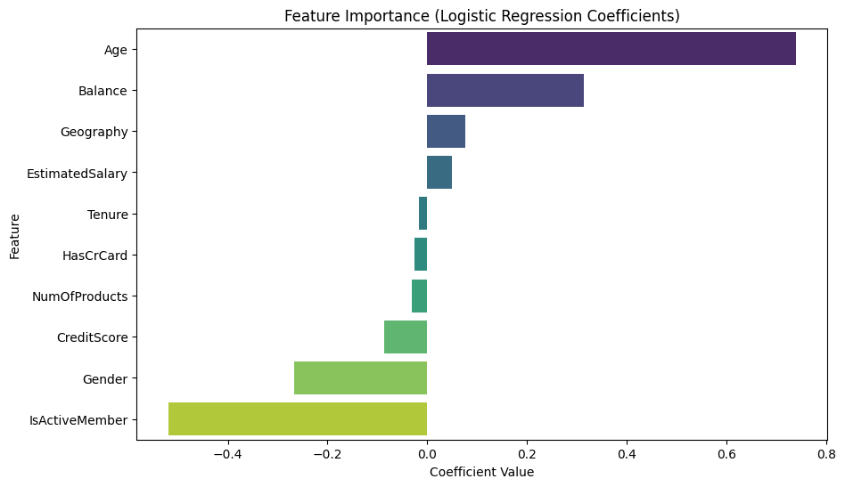
# Confusion Matrix for Naive Bayes
plot_confusion_matrix(y_test, y_pred_nb, "Naive Bayes")
# Naive Bayes does not provide direct feature importance visualization.
# You can interpret probabilities, but this is not visualized in standard models.
from sklearn.tree import plot_tree
# Confusion Matrix for Decision Tree
plot_confusion_matrix(y_test, y_pred_dt, "Decision Tree")
# Visualize Decision Tree
plt.figure(figsize=(20, 10))
plot_tree(dt_model, feature_names=X.columns, class_names=['No Churn', 'Churn'], filled=True)
plt.title("Decision Tree Visualization")
plt.show()
# Feature Importance for Decision Tree
dt_importance = pd.DataFrame({
'Feature': X.columns,
'Importance': dt_model.feature_importances_
}).sort_values(by='Importance', ascending=False)
# Plot feature importance
plt.figure(figsize=(10, 6))
sns.barplot(x='Importance', y='Feature', data=dt_importance, palette='coolwarm')
plt.title('Feature Importance (Decision Tree)')
plt.xlabel('Importance Score')
plt.ylabel('Feature')
plt.show()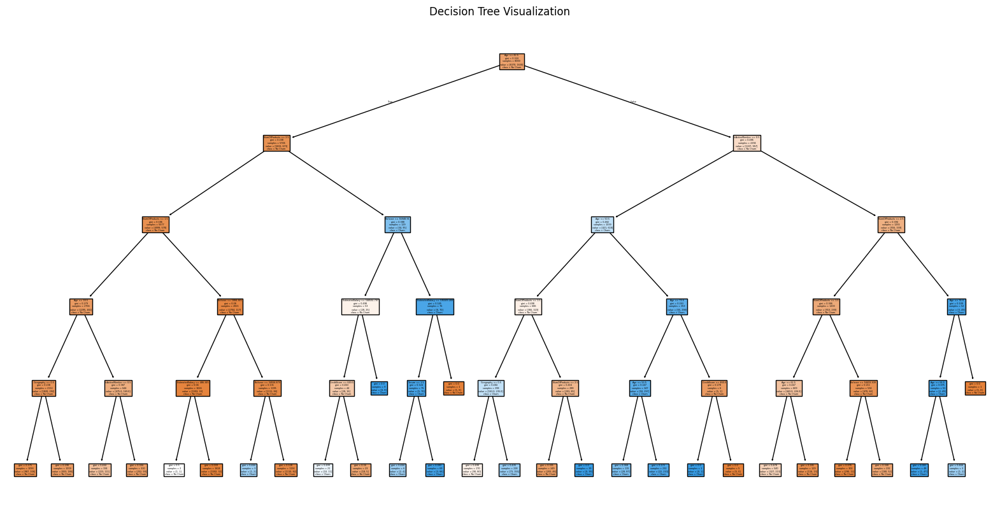
FutureWarning:
Passing `palette` without assigning `hue` is deprecated and will be removed in v0.14.0. Assign the `y` variable to `hue` and set `legend=False` for the same effect.
sns.barplot(x='Importance', y='Feature', data=dt_importance, palette='coolwarm')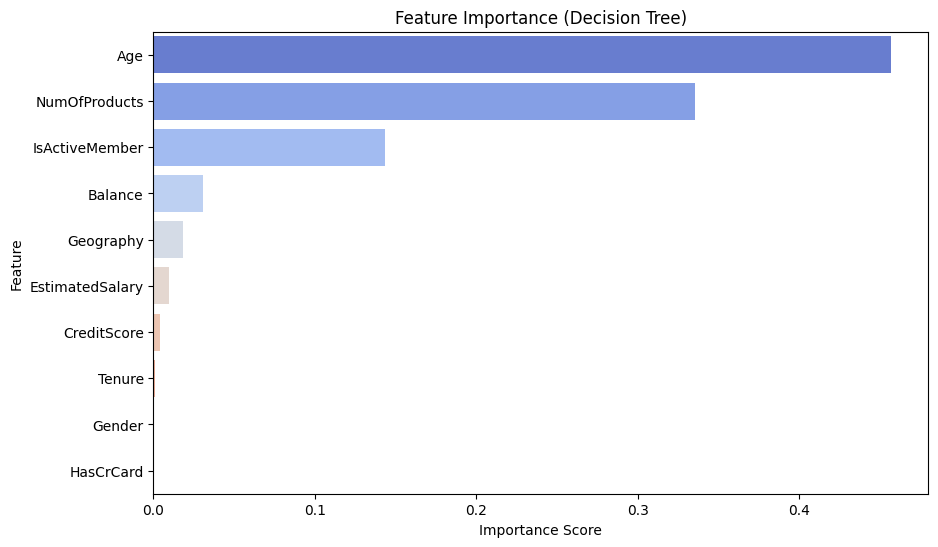
# Calculate mean and variance of 'CreditScore' for each class in the target variable 'Exited'
credit_score_stats = data.groupby('Exited')['CreditScore'].agg(['mean', 'var'])
class_probabilities = data['Exited'].value_counts(normalize=True).rename("P(Class)").sort_index()
credit_score_stats['P(Class)'] = class_probabilities
credit_score_stats| mean | var | P(Class) | |
|---|---|---|---|
| Exited | |||
| 0 | 651.853196 | 9149.656542 | 0.7963 |
| 1 | 645.351497 | 10064.403894 | 0.2037 |
#P(Geography|Exited)
geo_exited_counts = data.groupby(['Geography', 'Exited']).size()
exited_counts = data['Exited'].value_counts()
geo_given_exited = geo_exited_counts / exited_counts
geo_given_exited_table = geo_given_exited.unstack()
print(geo_given_exited_table)Exited 0 1
Geography
0 0.527942 0.397644
1 0.212859 0.399607
2 0.259199 0.202749#P(Balance|Exited)
import numpy as np
def gaussian_probability(x, mean, var):
return (1 / np.sqrt(2 * np.pi * var)) * np.exp(-((x - mean) ** 2) / (2 * var))
balance_stats = data.groupby('Exited')['Balance'].agg(['mean', 'var'])
#Specify a balance value for which to calculate the probabilities
balance_value = 50000 # Example balance value
balance_given_exited = {
class_label: gaussian_probability(balance_value, row['mean'], row['var'])
for class_label, row in balance_stats.iterrows()
}
print(balance_given_exited){0: 5.945340348787947e-06, 1: 5.333952035061307e-06}#P(Age|Exited)
import numpy as np
def gaussian_probability(x, mean, var):
return (1 / np.sqrt(2 * np.pi * var)) * np.exp(-((x - mean) ** 2) / (2 * var))
age_stats = data.groupby('Exited')['Age'].agg(['mean', 'var'])
#Specify an age value for which to calculate the probabilities
age_value = 40 # Example age value
age_given_exited = {
class_label: gaussian_probability(age_value, row['mean'], row['var'])
for class_label, row in age_stats.iterrows()
}
print(age_given_exited){0: 0.038130613680163516, 1: 0.03614527361626094}import pandas as pd
import seaborn as sns
import matplotlib.pyplot as plt
# 1. 데이터 로드
file_path = '/content/Bank_Churn.csv' # 적절한 파일 경로를 입력하세요
data = pd.read_csv(file_path)
# 2. 그래프 스타일 설정
sns.set_style("whitegrid")
# 3. 그래프 생성
fig, axes = plt.subplots(2, 2, figsize=(14, 10)) # 2x2 서브플롯
# 숫자 값 표시 함수 정의
def add_counts(ax):
"""막대 위에 숫자 값 추가"""
for container in ax.containers:
ax.bar_label(container, fmt='%d', label_type='edge', fontsize=9, padding=3)
# (a) Gender vs Exited
ax = sns.countplot(x='Gender', hue='Exited', data=data, ax=axes[0, 0], palette='coolwarm')
add_counts(ax)
axes[0, 0].set_title("(a) Gender vs Exited")
axes[0, 0].set_xlabel("Gender")
axes[0, 0].set_ylabel("Count")
# (b) HasCrCard vs Exited
ax = sns.countplot(x='HasCrCard', hue='Exited', data=data, ax=axes[0, 1], palette='coolwarm')
add_counts(ax)
axes[0, 1].set_title("(b) HasCrCard vs Exited")
axes[0, 1].set_xlabel("HasCrCard")
axes[0, 1].set_ylabel("Count")
# (c) IsActiveMember vs Exited
ax = sns.countplot(x='IsActiveMember', hue='Exited', data=data, ax=axes[1, 0], palette='coolwarm')
add_counts(ax)
axes[1, 0].set_title("(c) IsActiveMember vs Exited")
axes[1, 0].set_xlabel("IsActiveMember")
axes[1, 0].set_ylabel("Count")
# (d) Geography (Countries) vs Exited
ax = sns.countplot(x='Geography', hue='Exited', data=data, ax=axes[1, 1], palette='coolwarm')
add_counts(ax)
axes[1, 1].set_title("(d) Geography vs Exited")
axes[1, 1].set_xlabel("Countries")
axes[1, 1].set_ylabel("Count")
# 4. 레이아웃 조정 및 출력
plt.tight_layout()
plt.show()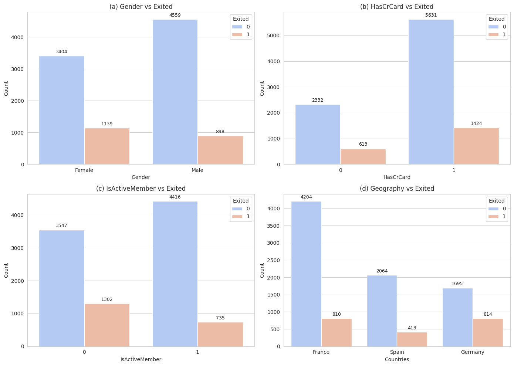
# Import necessary libraries
import pandas as pd
from sklearn.model_selection import train_test_split
from sklearn.preprocessing import StandardScaler, LabelEncoder
# Load the dataset
data = pd.read_csv('bank_churn.csv') # Replace with your dataset file path
# Encode categorical variables
le_geography = LabelEncoder()
le_gender = LabelEncoder()
data['Geography'] = le_geography.fit_transform(data['Geography'])
data['Gender'] = le_gender.fit_transform(data['Gender'])
# Define features (X) and target (y)
X = data.drop(['CustomerId', 'Surname', 'Exited'], axis=1) # Drop irrelevant columns
y = data['Exited']
# Split dataset into training and testing sets
X_train, X_test, y_train, y_test = train_test_split(X, y, test_size=0.2, random_state=42, stratify=y)
# Standardize the features
scaler = StandardScaler()
X_train_scaled = scaler.fit_transform(X_train)
X_test_scaled = scaler.transform(X_test)
from sklearn.linear_model import LogisticRegression
from sklearn.metrics import classification_report, confusion_matrix
import seaborn as sns
import matplotlib.pyplot as plt
# Train Logistic Regression Model
log_model = LogisticRegression(random_state=42, max_iter=500)
log_model.fit(X_train_scaled, y_train)
# Predictions
y_pred_log = log_model.predict(X_test_scaled)
# Confusion Matrix
cm_log = confusion_matrix(y_test, y_pred_log)
plt.figure(figsize=(8, 6))
sns.heatmap(cm_log, annot=True, fmt='d', cmap='Blues', xticklabels=['No Churn', 'Churn'], yticklabels=['No Churn', 'Churn'])
plt.title('Confusion Matrix - Logistic Regression')
plt.xlabel('Predicted')
plt.ylabel('Actual')
plt.show()
# Classification Report
print("Classification Report - Logistic Regression:\n", classification_report(y_test, y_pred_log))
# Feature Importance (Coefficients)
coefficients = pd.DataFrame({
'Feature': X.columns,
'Coefficient': log_model.coef_[0]
}).sort_values(by='Coefficient', ascending=False)
# Plot Feature Importance
plt.figure(figsize=(10, 6))
sns.barplot(x='Coefficient', y='Feature', data=coefficients, palette='viridis')
plt.title('Feature Importance - Logistic Regression')
plt.xlabel('Coefficient Value')
plt.ylabel('Feature')
plt.show()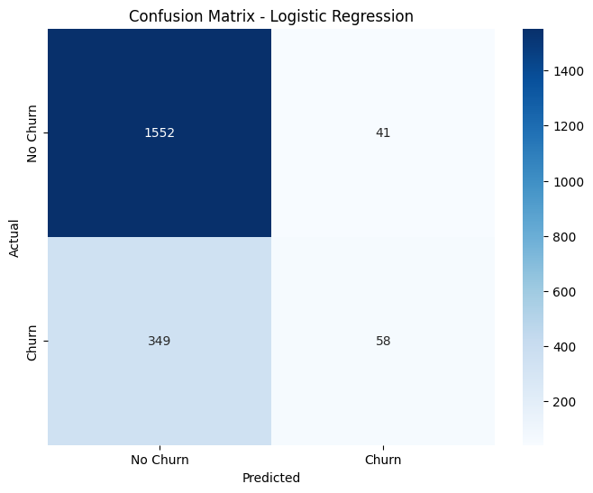
Classification Report - Logistic Regression:
precision recall f1-score support
0 0.82 0.97 0.89 1593
1 0.59 0.14 0.23 407
accuracy 0.81 2000
macro avg 0.70 0.56 0.56 2000
weighted avg 0.77 0.81 0.75 2000
FutureWarning:
Passing `palette` without assigning `hue` is deprecated and will be removed in v0.14.0. Assign the `y` variable to `hue` and set `legend=False` for the same effect.
sns.barplot(x='Coefficient', y='Feature', data=coefficients, palette='viridis')from sklearn.ensemble import RandomForestClassifier
# Train Random Forest Model
rf_model = RandomForestClassifier(n_estimators=100, random_state=42)
rf_model.fit(X_train, y_train)
# Predictions
y_pred_rf = rf_model.predict(X_test)
# Confusion Matrix
cm_rf = confusion_matrix(y_test, y_pred_rf)
plt.figure(figsize=(8, 6))
sns.heatmap(cm_rf, annot=True, fmt='d', cmap='Blues', xticklabels=['No Churn', 'Churn'], yticklabels=['No Churn', 'Churn'])
plt.title('Confusion Matrix - Random Forest')
plt.xlabel('Predicted')
plt.ylabel('Actual')
plt.show()
# Classification Report
print("Classification Report - Random Forest:\n", classification_report(y_test, y_pred_rf))
# Feature Importance
rf_importances = pd.DataFrame({
'Feature': X.columns,
'Importance': rf_model.feature_importances_
}).sort_values(by='Importance', ascending=False)
# Plot Feature Importance
plt.figure(figsize=(10, 6))
sns.barplot(x='Importance', y='Feature', data=rf_importances, palette='coolwarm')
plt.title('Feature Importance - Random Forest')
plt.xlabel('Importance Score')
plt.ylabel('Feature')
plt.show()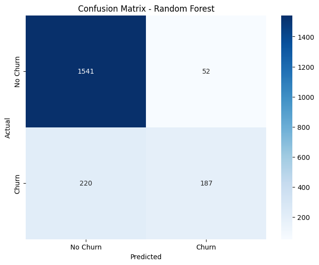
Classification Report - Random Forest:
precision recall f1-score support
0 0.88 0.97 0.92 1593
1 0.78 0.46 0.58 407
accuracy 0.86 2000
macro avg 0.83 0.71 0.75 2000
weighted avg 0.86 0.86 0.85 2000
FutureWarning:
Passing `palette` without assigning `hue` is deprecated and will be removed in v0.14.0. Assign the `y` variable to `hue` and set `legend=False` for the same effect.
sns.barplot(x='Importance', y='Feature', data=rf_importances, palette='coolwarm')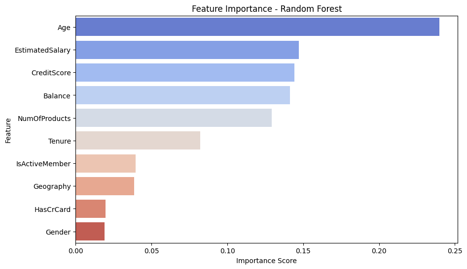